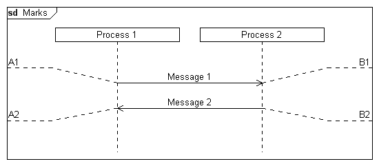

Syntax
Parameters
Syntax
Parameters
 instanceid
text
orientation (optional)
instanceid
text
orientation (optional)
| Value | Description |
|---|---|
| l | The mark will be displayed at the left side of the diagram. |
| r | The mark will be displayed at the right side of the diagram. |
| t | The mark line will be displayed above the point where it is defined. |
| b | The mark line will be displayed below the point where it is defined. |
The default value for this parameter is "lt".
Example
|
DiagramName: Marks DiagramStyle: uml PageSize: 550,auto PageMargins: 10,10,10,10 Left: 50 Right: 50 process: p1, Process 1 process: p2, Process 2 ; msg: p1, p2, Message 1 mark: p1, A1 mark: p2, B1, r; msg: p2, p1, Message 2 mark: p1, A2, lb mark: p2, B2, rb; |
 |
See also